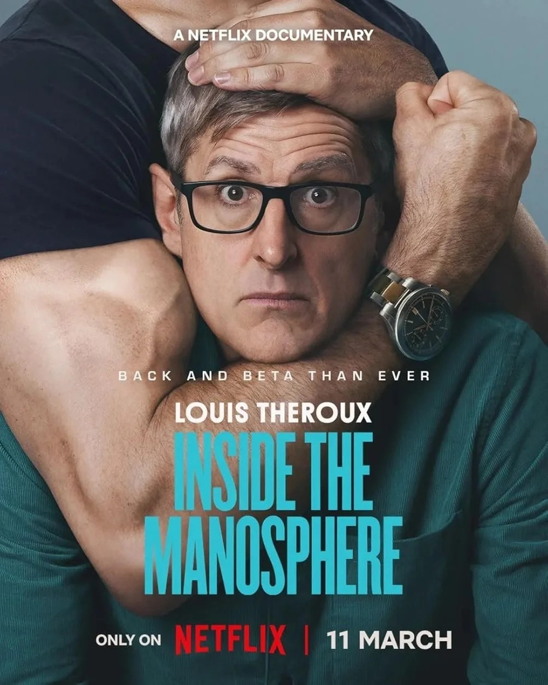
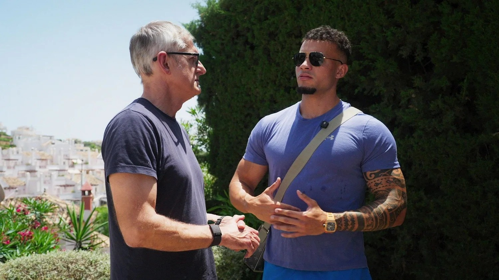

Louis Theroux's new Netflix documentary on the Manosphere gets a lot right about the problem, and almost nothing right about the solution.
April 2, 2026 · Brian Mulligan, LPCC, CAT

Last weekend I watched the documentary "Louis Theroux: Inside The Manosphere", a new documentary on Netflix. In the film, Louis interviews famous male social media influencers, known for their controversial content and opinions about masculinity. This was the first time I'd ever seen or heard of Louis Theroux, and after watching the doc and looking up some of his past work, I came to a better understanding of the name behind the title.
One of Louis Theroux's most appealing qualities is his willingness to put himself and a camera in close proximity to disreputable figures and maintain an earnest, playful attitude in the midst of highly distressing interactions. It's not overtly a "gotcha" or "takedown" style of interviewing - it's more subtle than that, and can be uniquely endearing. However, at several points throughout "Inside the Manosphere", I also found it to be very off-putting. I think the documentary - an 'exposé' of toxic masculinity and its contemporary progenitors - will likely do more harm than good. Let's peel back the layers and look into why.
What is the "Manosphere"? In short, it's a loose circle of online influencers and figures who generate content that promotes a very clear idea of what it means to be a man. To the Manosphere, the ideal man is rich, muscular, confident, entrepreneurial, independent, and has lots of sex with lots of different women. He is also domineering over women (and other men), must command that women be subservient to him, must not be gay, and must never be weak, vulnerable, or humiliated.
Most of these ideas about masculinity are bad ideas. Does that even need to be explained? I didn't think so, but maybe I'm not the target audience, because the documentary seems to signal the viewer just how bad they are over and over again. There's some discussion of the impact of trauma, absent fathers, the attention economy, and a symbiotic relationship between the Manosphere and other sociocultural ecosystems (like OnlyFans models), but not nearly enough.
The majority of the documentary depicts these male influencers doing and saying things that are offensive and wrong, in front of Louis Theroux. Tonally, it's a different viewing experience than watching the influencers' actual content, given that we as viewers are watching it from the perspective of a 'shedding light' on the subculture, but the content itself is no different than what you would see on their respective social media channels. There's not a lot of push-back from Louis on the misogynistic and homophobic rantings of these influencers, which, to be fair, given their highly aggressive posturing, I can understand. But the biggest problem is that the documentary offers no alternative to the model of masculinity promoted by these influencers.

When men were boys, we needed figures to look up to. Young men and boys still need this, and will continue to need this, as long as there are young men and boys on this earth. Men also need belonging, safety, and acceptance. This is an ineluctable fact of life. We are human, which means we are dependent on other people. By definition, that makes us vulnerable. Yet nearly every contemporary depiction of masculinity rejects this human need.
We are given two choices. First, the "Titan": comic book superheroes who are literally beyond human, or CEOs whose value is measured solely by dominance over others. In this model, if Captain America turns back into a skinny wimp or Tony Stark loses his fortune, their value vanishes. They are only "real men" as long as they are exceptional. On the other end of the spectrum is the "Sitcom Dad." This is a man who loves his family but is also a pathetic idiot who lives in permanent fear of disappointing his wife. While honorable in his own way, he is not exactly aspirational. No kid grows up wanting to be Phil Dunphy. The worst thing a man can be is weak (read: vulnerable), and the second-worst thing a man can be is feminine (read: having feelings).
It is irresponsible to place the burden of blame for these conceptions of masculinity on just one group. It's not the influencers' fault that modern masculinity is fucked up. It's also not Iron Man's fault, or Donald Trump's fault, or third-wave feminism's fault. And even if there was proof that there was someone to blame, pointing the finger doesn't help. In fact, the subjects in this documentary - for all their misconceptions, their repulsive speech, and even their hideous violent behavior - are victims of a social failing that emerged long before any of them were born. Some of them even speak on these cultural insights with unexpected incisiveness.
At this point, I risk sounding like an apologist. In some ways perhaps I am. I remember what it was like to be called a "pussy" in front of other boys, and then turning around and using those words on someone else. Better to be the one dishing it out than the one taking it, I remember thinking at the time. These little signals, the coded messages men receive across the life span, teach us that if we do not appear strong, smart, competent, productive, righteous and wealthy, then we will be castigated and humiliated. And, ultimately, abandoned. The online "communities" these influencers rely on for basic human needs - for acceptance, for recognition, and for value, however contrived - also come with rigid demands that echo those in the broader culture:
Don't be weak. Don't be poor. Don't be emotional. Don't be stupid. Be a man.
Louis Theroux appeared to be grappling with these implications in real-time during moments of the documentary. He'd look at his subjects, speechless and stunned, as if to imply that there was nothing he could say to break through to their humanity. If one views a Manosphere influencer's on-camera persona as a defense against appearing stupid or weak, then perhaps the most threatening thing you can do to them is point your own camera in their face and start asking them personal questions. Any therapist knows that if you challenge and reject someone's narrative - someone's identity - too strong and too soon, you can expect backlash. Right now, the threat these influencers in the documentary appeared to detect when Louis asked them questions has been, in a way, totally validated. The internet is abuzz about Inside the Manosphere, and everyone is in agreement: all those awful men are pathetic, hideous losers.
So, reader, at this point you might be wondering, "If pointing a camera at these young men and showing everyone what's wrong with them isn't helpful, then what is?" Well, we need to show men it's okay to be human, and we need to make it realistic and achievable. We need to not abandon men when they screw up or act out. We need to teach men what it is to love and be loved, and to still feel empowered, capable, and strong. We need to model standards that make sense. That isn't accomplished solely through judgment and criticism. That's accomplished through providing better options. Ones that are actually attractive, and aren't boring. If the Manosphere is what men are drawn toward, we can't just tell them they're wrong - we also need to show them what's right, and explain why.
It's almost impossible to imagine what this looks like, beyond just a vague wish, and that's because American culture hasn't really seen it. At least, not for a long time. As our culture evolves, so do our ideas about what's acceptable and good. So, while it may be impossible to predict what positive masculinity will look like in the next few decades, we need to start contributing something now. We can reject these influencers' bad ideas and shout from the rooftops that men should not be like that (accusatorially pointing a finger) - but if we aren't coming to the table with a better option, then boys and men will find whatever fills that void.
Men need to be vulnerable. They also need to feel strong. They need belonging, understanding, and a shared mission. While "Inside the Manosphere" acknowledges some of these human needs and the myriad forces that draw men to communities like the Manosphere, simply showing us something that's repulsive has no real social value. It actually reinforces damaging and reductive ideas, encapsulated in statements like 'men are pigs', which only serve to keep men stuck, without any outlet for masculine expression. Ironically, at some level, the Manosphere understands this - they've felt rejected and devalued by "the system", and so they carved out a community where they could reenact their attachment wounds in a way that makes them feel like they have power, like they have a voice in the conversation. Louis Theroux understands that the Manosphere is waiting with open arms for all boys and men who feel like their masculinity isn't welcome anywhere else - men who feel like they don't matter. I just wish that he made more of an effort to tell the men watching that they do matter, and that people care.
We don't need more cameras pointed at the wreckage. We need a model of masculinity that is both vulnerable and strong - one that is realistic, attractive, and actually works.